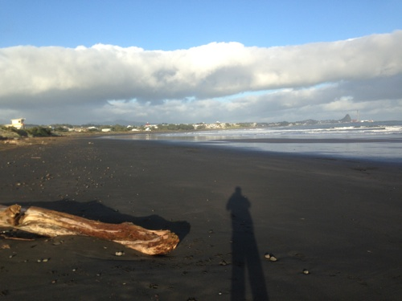
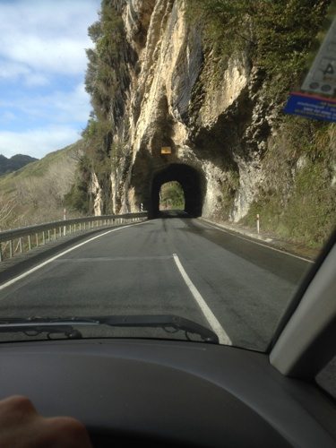
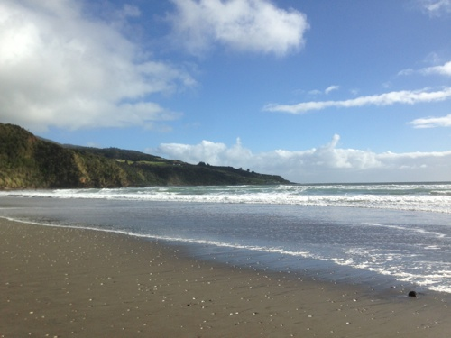
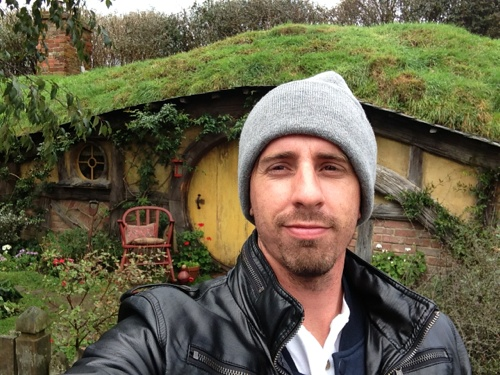
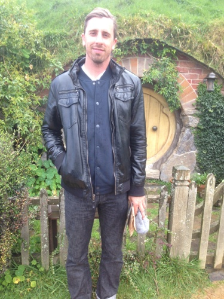

I slept in Wellington again - in the exact same spot - perched on a Mt. Victoria hillside in my campervan. It was less windy but more rainy. Before sleeping, I stopped into a restaurant called Duke Caravill's. I recommend it when you visit Wellington.
The next morning I awoke, and went for a swim. Wellington has a large indoor swimming pool that costs $4 for a visitor. I went for a swim, then a jacuzzi, and then a nice shower. Clean and invigorated, I started the drive all the way up to New Plymouth.
On the road, and for many miles, I saw Mt. Taranki. I took photos, but I deleted them all. I couldn't capture the moody spectacularness of it's partially cloud covered peak. When I arrived in New Plymouth it was dark. I spent the night at Fitzroy Beach.
I awoke the next morning hoping for surf, but there was none. I decided to continue driving North - to Raglan.
 I arrived to Raglan that afternoon. I checked out Manu Bay first. The surf was great and rideable at my skill level - shoulder to occasional head high. But, there was a high school competition going on. No one else could enter the water. So I surfed at the nearby beach break. It was decent.
I camped later that night in my campervan with the expectation that the competition was over, and I could surf Raglan's famous Manu Bay in the morning. But the surfing competition had another day. Even before the light of dawn the competition organizers had setup, and no one besides competitors could surf.
The next day a MASSIVE swell was coming in. It'd be 10 foot waves with occasional higher - too big for me to surf. I decided to head out and try my luck on the east coast at Mt. Managui - a 3 hour drive.
Mt. Managui was pretty, but the waves were flat. I passed a sign for Hobbiton an hour back. With no waves, I hopped back in my car and made the drive to Hobbiton.
The road into Mt. Managui was steep, and it'd be just as steep going back to Hobbiton. I started the drive with over a quarter tank of gas. About half way up the steep drive I was on empty. My gas light was on, and I was taken by surprise. I still had multiple miles to to get to the top. I slowed way down - semi-trucks passing me. At any minute I could be out of gas.
I reached the top of the mountain! I put it into nuetral and coasted the rest of the way down. Eventually I was down the mountina. It was another 5 kilometers when I coasted into a gas station on empty and with smelly breaks. The station attendant greeted me with a knowing "come from Mt. Managui, eh?".
I paid over $100 to fill up and took back off for Hobbiton. I arrived in Hobbiton, joined the tour, and took pictures in front of little doors. The Green Dragon Inn was my favorite part. I sat by the large fire and chatted with two girls from London. Then I drove to Piha Beach - still searching for surf.
 {kind=link}
{kind=link}